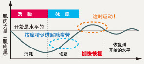

姿势不好的话会增加肌肉负担。
增加支撑脊椎和骨盆的肌肉负担。 负担会引发肌肉酸痛的恶性循环。
如果任由肌肉疲劳，会发生什么?
肌肉会变的无弹性，血液循环不畅通。 肌肉会变得象老化的皮筋套一样发挥不了作用。
转动的秘密
仅仅是一个简单的姿势就会影响一个人的仪表!

有效地锻炼身体保养是必要的
肌健身运动可以增加肌肉，但是，只是这样会积蓄疲劳。 健身消耗脂肪后，进行按摩可以加快解除疲劳，更具运动效果，起到“快速恢复”的作用。 健身运动+良好的休息是要点。
 有效地锻炼身体保养是必要的
有效地锻炼身体保养是必要的